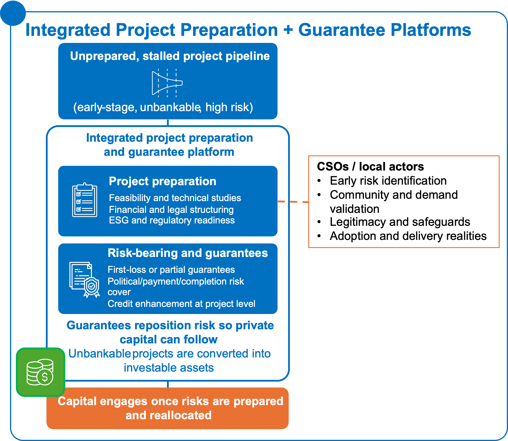
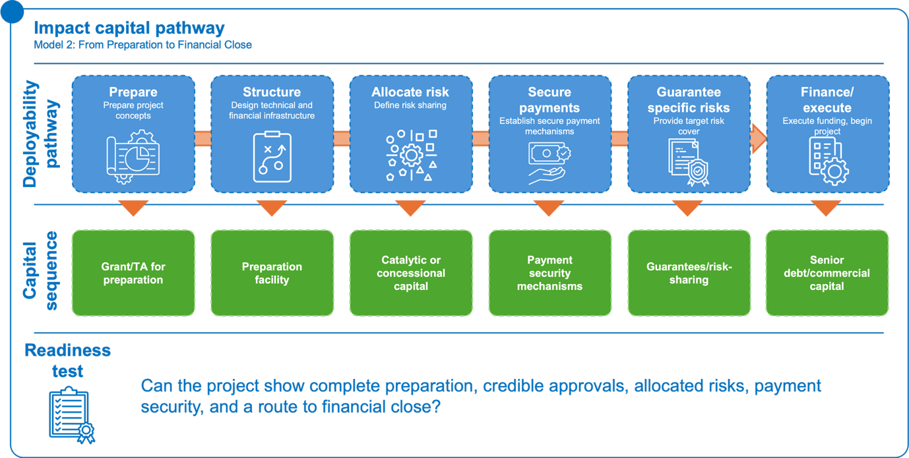
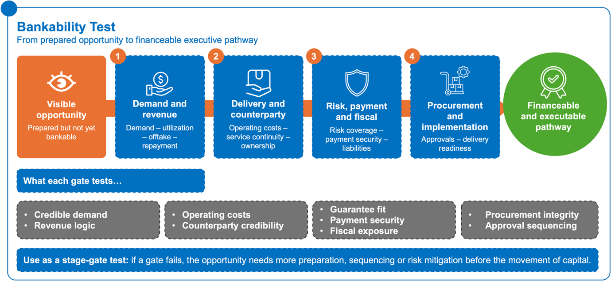
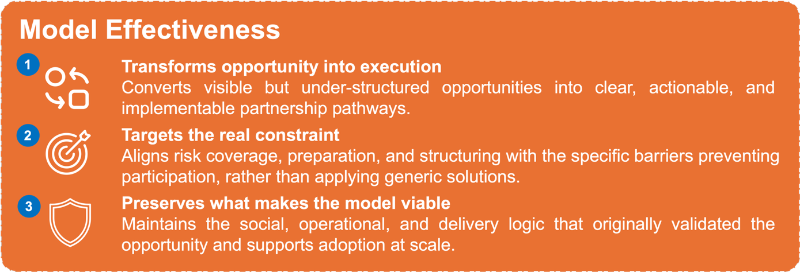
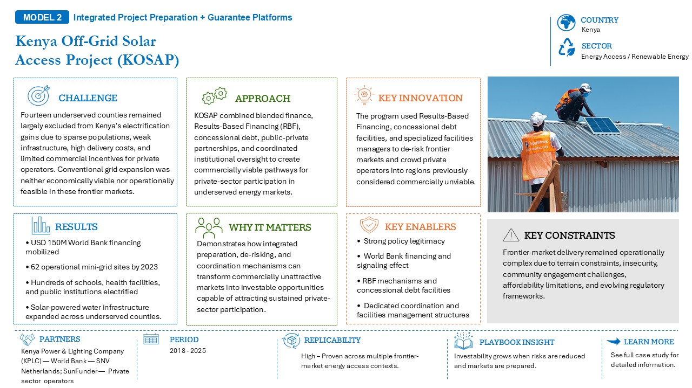
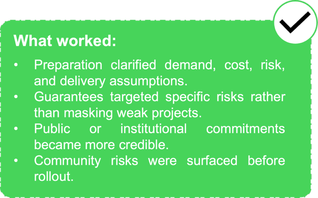

9.1 What problem the model solves

Figure 17: From pipeline to bankability: preparing projects and reallocating risk so capital can finally engage.Figure 17: From pipeline to bankability: preparing projects and reallocating risk so capital can finally engage.This model addresses situations where development or investment opportunities are already visible and strategically important, but remain difficult to finance, scale, or execute because preparation is incomplete, risks are poorly allocated, or implementation readiness is uncertain.
In many cases, the opportunity is not missing. The social need is clear, the development rationale is strong, and public or institutional interest may already exist. What is missing is a structured pathway that makes the opportunity sufficiently credible for partners, financiers, and implementers to act.
This model helps existing social-impact and development initiatives evolve into scalable and financeable partnership pathways by pairing project preparation with targeted risk coverage and implementation readiness. It does not replace the original delivery intent or social-impact logic. Instead, it strengthens the conditions required for those initiatives to become legible, credible, and executable at scale.
9.2 Where it applies
This model is most relevant where opportunities are already identified, but confidence in delivery, payment, risk allocation, or implementation readiness is not yet sufficient for private-sector or institutional participation.
Energy
This model can apply to IPPs, transmission, geothermal, grid infrastructure, renewable generation, and other energy assets that require significant preparation before capital can engage.
In these sectors, viability often depends on credible assumptions around demand, costs, timelines, counterparties, tariff or payment structures, and system performance. Even where resource potential or policy ambition is strong, projects can stall if preparation is incomplete or if investors cannot see how risks will be allocated and managed.
Integrated preparation and guarantee support can help move energy opportunities from strategic priority to financeable project.
Food and agriculture
This model can apply to irrigation schemes, agro-industrial zones, storage infrastructure, cold chain systems, logistics corridors, market hubs, and other value-chain infrastructure.
These opportunities often depend on realistic expectations around production, throughput, coordination, offtake, logistics, and operating costs. If these assumptions are not tested and structured clearly, projects may remain attractive in principle but difficult to finance or implement.
Preparation and risk coverage can help translate agricultural and food-system ambition into executable investment pathways, especially where infrastructure and market coordination are both required.
Health
This model can apply to hospitals, diagnostics, equipment PPPs, digital health infrastructure, delivery platforms, and other health-system investments requiring coordination between public, private, and development actors.
In health, sustainability often depends on credible expectations around service utilization, reimbursement discipline, provider performance, payment continuity, and quality standards. Opportunities may be strategically important, but difficult to finance if public purchasing, claims settlement, or operational continuity is uncertain.
Integrated preparation can help clarify the operating model, while targeted risk coverage can improve confidence in the payment and delivery pathway.
9.3 Transaction mechanics
The model combines structured preparation with selective risk coverage to make opportunities more legible, credible, and executable.
Typical elements include:
- Preparation funding to support early technical, operational, financial, legal, and institutional work;
- Feasibility studies grounded in delivery realities, market conditions, and realistic operating assumptions;
- Legal and financial structuring that reflects operational constraints, revenue logic, payment pathways, and counterpart responsibilities;
- Environmental and social documentation that incorporates community, implementation, safeguard, and adoption considerations;
- Procurement-ready dossiers with clear scope, sequencing, responsibilities, and performance expectations;
- Guarantees or risk-sharing instruments aligned to the specific risks constraining participation;
- Payment security mechanisms that improve confidence in timing, reliability, and counterparty performance;
- Contingent liability management informed by realistic exposure, fiscal capacity, and long-term public commitments;
- Implementation readiness checks that confirm whether the necessary approvals, actors, capabilities, and systems are in place before moving forward.
Together, these elements help translate ambition into a credible execution pathway. Preparation makes the opportunity visible and structured; targeted risk coverage helps make it investable.
The model works best when preparation and de-risking are designed together. Preparation without risk coverage may produce well-documented but still unfinanceable projects. Risk coverage without preparation may protect investors without solving the underlying execution problem.
9.4 Impact Capital Pathway: From Unprepared Opportunity to Financeable Project
Integrated project preparation and guarantee platforms require capital to move in stages as an opportunity becomes more structured, risk-aware, and financeable. Early grant funding and technical assistance support feasibility, legal structuring, ESG and social safeguards, community risk assessment, financial modelling, and procurement documentation. Preparation facilities help move priority opportunities from concept stage to procurement-ready or investment-ready status. Catalytic or concessional capital can then support promising opportunities where early risks remain unresolved. Guarantees and risk-sharing instruments should be used only for specific risks, such as payment default, political risk, completion risk, counterparty risk, or liquidity risk. Senior debt and commercial capital become appropriate once preparation, approvals, revenue logic, risk allocation, and payment security are credible.
The key financing question is not simply whether the project has development value or political support. It is whether the opportunity has been prepared, structured, and de-risked enough for capital and implementation partners to move forward with confidence.

Key indicators to track include:
- number of projects moving from concept to preparation-ready;
- number of projects reaching procurement-ready or investment-ready status;
- time from preparation to financial close;
- percentage of risks explicitly allocated;
- payment security mechanism established;
- guarantee utilization rate;
- private capital mobilized per unit of grant or concessional capital;
- fiscal exposure assessed and managed.
Risks to test include:
For detailed examples of project preparation and de-risking models in practice, see the Case Study Compendium.
9.5 CSO and institutional actor lens
CSO role
CSOs can play an important role in ensuring that preparation reflects delivery realities rather than only technical assumptions.
They can help:
- surface early community-level risks, adoption constraints, and legitimacy considerations;
- support consultation processes that strengthen trust and reduce implementation friction;
- identify operational issues that may affect uptake, service quality, or continuity;
- provide insight into affordability, access, inclusion, and user experience;
- support accountability monitoring during preparation and implementation;
- help validate whether assumptions about demand, delivery, and participation reflect what is happening on the ground.
In this model, CSOs are not simply consulted as safeguard actors. They can help improve the quality of preparation by making social, operational, and community realities visible early enough to shape the project structure.
Institutional actor role
Institutional actors assess which opportunities merit preparation, where risks or gaps remain, and what type of support is needed to move from concept to execution.
Their role may include:
- prioritizing opportunities that are strategically important and realistically executable;
- funding or coordinating preparation work;
- deciding where catalytic capital, guarantees, or technical assistance are appropriate;
- aligning internal and external stakeholders around a common pathway;
- testing whether public commitments, payment pathways, and institutional roles are credible;
- ensuring that preparation and risk coverage are linked to long-term sustainability, not only financial close.
9.6 Bankability test and failure modes
This model is more likely to succeed when there is shared confidence in how the opportunity will function in practice. Bankability depends not only on technical preparation, but on whether delivery, payment, risk allocation, and institutional commitments are credible enough for partners and capital to engage.
Bankability test
Key questions include:
- Demand and revenue logic: Are assumptions around demand, revenue, utilization, or offtake credible and grounded in delivery experience?
- Operational sustainability: Is there a realistic understanding of operating costs, service continuity, maintenance, and long-term institutional ownership?
- Counterparty credibility: Is the public, purchasing, or contracting counterparty reliable and consistent in its commitments?
- Risk coverage fit: Are guarantees or risk-sharing instruments aligned with the risks that actually constrain participation?
- Payment security: Is there enough confidence in the timing and reliability of payment flows?
- Procurement integrity: Is procurement structured in a way that supports transparency, competition, and disciplined implementation?
- Approval sequencing: Are approvals, permits, and decision points sequenced realistically enough to move from preparation to delivery?
- Fiscal exposure: Are fiscal and contingent liabilities understood, disclosed, and manageable?
- Figure 18: From readiness to reality: pressure-testing demand, delivery, risk, and procurement before capital moves.Figure 18: From readiness to reality: pressure-testing demand, delivery, risk, and procurement before capital moves.Implementation readiness: Are the actors, systems, and capabilities required for delivery sufficiently in place?

Common failure modes
| Failure condition | What it means in practice |
|---|---|
| Technical preparation disconnected from reality | Preparation focuses on studies and analysis without grounding in actual delivery conditions, capacity, or implementation constraints. |
| Overly optimistic feasibility assumptions | Feasibility studies rely on demand, cost, or performance assumptions that have not been tested in real operating environments. |
| Misaligned risk coverage | Guarantees or risk instruments do not address the specific risks that are actually preventing capital from entering. |
| Late or misused guarantees | Guarantees are introduced too late in the process or used to compensate for fundamentally weak project design. |
| Weak payment security | Payment mechanisms are assumed to function but are not contractually defined, funded, or enforceable. |
| Unclear or weak procurement processes | Procurement is delayed, opaque, or lacks credibility, creating uncertainty for investors and implementers. |
| Politically strong but fiscally weak commitments | Public-sector commitments are visible or announced but lack the fiscal backing or credibility needed for long-term delivery. |
| Late-stage legitimacy risks | Community acceptance, adoption, or social risks are identified only after structuring is advanced, increasing implementation risk. |
| Breakdown in institutional confidence | Trust between counterparties erodes during implementation due to delays, unmet commitments, or unclear roles. |
| Preparation without execution pathway | Preparation produces reports and documentation but does not lead to a credible, time-bound path to implementation and delivery. |
Closing logic
Integrated project preparation and guarantee platforms are most useful when the problem is not the absence of opportunity, but the absence of credible structure.

For CSOs and development actors, this model helps translate social-impact activity, delivery experience, and community legitimacy into preparation that can support scale. For institutional actors and financiers, it clarifies what must be prepared, what risks must be covered, and what commitments must be credible before participation becomes viable.
9.7 Illustrative case


In practice, integrated preparation and de-risking structures have become particularly important in sectors where projects are strategically valuable but remain difficult to finance due to execution uncertainty, payment risk, or implementation complexity.KOSAP shows how integrated preparation and de-risking can turn commercially unattractive frontier energy markets into viable delivery pathways. By combining World Bank financing, results-based financing, concessional debt, public-private coordination, and dedicated facilities management, the project reduced risks for private operators entering underserved counties with weak infrastructure, dispersed demand, and high delivery costs. Its success rested on strong policy legitimacy, coordinated institutional support, and targeted financial instruments that made off-grid solar deployment more investable, even though execution remained constrained by terrain, affordability, community engagement, and evolving regulatory conditions.